Code
# libraries
library(coda, verbose=FALSE)
library(rjags, verbose = FALSE) # coda.samples
library(jagsUI, verbose=FALSE) # wrapper for rjags
library(mcmcplots) # caterplot
library(tidyverse, verbose=FALSE)
library(gridExtra)In the U.K, Canada, the countries of the European Union and other countries with managed healthcare systems, the decision to make a new drug or other medical treatment available to patients in the healthcare system is based on an assessment of the cost-effectiveness of treatment with respect to the prevailing standard of care. This is typically accomplished via a three phase process the includes the submission of a dossier to the relevant health authority that contains a statistical meta-analysis of all relevant clinical data and economic evaluation of the utility of the new treatment to the healthcare system.
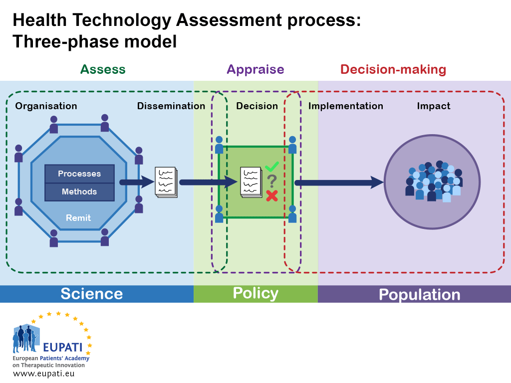 source
Cost effectiveness is typically presented as a Cost-Utility analysis, conducted from a systems perspective that measures utility of medical effects in Quality Adjusted Life Years using ICERs (Incremental Cost Effectiveness Ratio) = (Additional Costs) / (Additional Benefits).
The final decision often comes down to examining the equation: Net Benefit = Uλ - C where:
We believe that a HTA style analysis provides a paradigm for decision making applicable to many complex decisions beyond healthcare. The goal of this workshop is to work through a textbook example of an HTA style cost-utility analysis that informs a typical decision made made by healthcare authorities. We will show how all available clinical data and relevant economic data can be combined in a single model which simulates the joint distribution of the model parameters and allows inferences to be made that take account the uncertainties introduced by the underlying assumptions. Along the way we will introduce the R language for statistical computing, the MCMC algorithm that enables fitting complex Bayesian models and point out the benefits of working in a way that facilitates reproducible research and literate programming. Note that the content of this course is based on the textbook: Evidence Synthesis for Decision making in Healthcare by Welton et al. (2012) which in spite of the passing years, remains an excellent text for conveying the essentials of statistical modeling for health economic decisions. References to “the text” refer to this textbook unless otherwise stated.
Suppose you have a random variable Y that describes the outcome of some experiment and that the distribution of Y depends on some parameter \(\theta \in \mathbb{R}\). You would like to know the probability of observing the data, y. You can determine the probability of Y given that the parameter in your experiment was set to \(\theta\) by integrating over the joint distribution of both variables, \(P(Y,\theta)\).
\[ P(y) = \int_{\mathbb{R}} P(y,\theta) d\theta \] Joint distributions are usually extremely difficult to determine, so in practice people work with the prior distribution of \(\theta\), \(\pi(\theta)\) and the conditional distribution of Y given \(\theta\), \(P(Y | \theta)\). The above equaation then becomes:
\[ P(y) = \int_{\mathbb{R}} \pi(\theta) P(y | \theta)d\theta \]
\(\pi(\theta)\) is the prior distribution for determined from all of the available information about before any data is collected. P(y) is the prior predictive distribution for Y.
Once data has been collected, Bayes Theorem allows the posterior distribution of \(\theta\) to be determined as:
\[ \pi(\theta|y) = \frac{\pi(\theta)P(y|\theta)}{P(y)}\]
From here, a posterior distribution for Y can be computed by sampling from the distribution and \(\pi(theta|y)\). Note however, that in practice in all but the simplest situations it is extremely difficult to compute the integral P(y). For this reason, Bayesian inference did not become common until the 1990’s when computers powerful enough to take advantage of advanced numerical techniques such as Markov Chain Monte Carlo (MCMC) and Gibbs Sampling became available.
A Markov Chain is a sequence of random variables \(X_1, X_2, . . . X_n\) that take values in some state space such that the state at time n, \(X_{n+1}\), given \(X_n\) and all previous values of the chain depends only on the value of \(X_n\). In other words, the future state of the chain depends only on its current state and not on its past history. This property is called the Markov Property. A simple example of a Markov chain is a random walk where where at each position a particle moves up or down from wherever it is according to some random draw. The following gif illustrates a particle that randomly moves up or down according to a draw from a standard normal distribution.
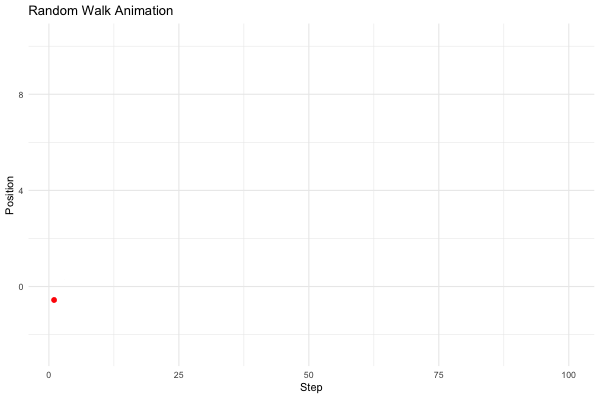
The probabilities of the chain moving from one state to another are determined by a matrix P of transition probabilities . The position of the chain in its state space at time n is determined by \(\Pi_n = P^n \Pi_0\) where \(\Pi_0\) is the initial state of the chain. A Markov chain that meets certain conditions will converge to a stationary distribution as n approaches infinity. Convergence is independent of the initial state of the chain.
Markov Chain Monte Carlo refers to a family of algorithms for obtaining numerical approximations to probability distributions represented by multi-parameter integrals. The idea is to construct a Markov Chain that will converge to the target distribution. MCMC originated with the work of John von Neumann, Stanislaw Ulm and others at Los Alamos during the Second World War, and was introduced to the statistical community in a series of papers including Metropolis et al. (1953) and Hastings (1970). German & German (1984) extended this work to introduce the Gibbs Sampler which is a special case of the Metropolis-Hastings Algorithm. We will use the Gibbs Sampler in the work below.
Although there are multiple MCMC engines available to power R based Bayesian Models, we have chosen to run JAGS (Just Another Gibbs Sampler) via the rjags interface for the following reasons:
JAGS is a free, open-source software package that is widely used in the Bayesian community.JAGS runs the BUGS language for specifying Bayesian models and was the obvious choice for a first attempt to transfer the original code supplied in the supplementary material to the text from the now obsoleteWinBugsprogram to a modern MCMC engine.The JAGS program is available from http://mcmc-jags.sourceforge.net/, and the rjags package is available from https://cran.r-project.org/web/packages/rjags/index.html.
Other MCMC Engines compatible with R include:
Stan is a probabilistic programming language that leverages Hamiltonian Monte Carlo (H (specifically its No-U-Turn Sampler (NUTS)) for efficient Bayesian inference, offering advantages like faster convergence, reduced tuning burden, and a more intuitive modeling process. Stan is the production-level MCMC engine.nimble is a system for writing hierarchical statistical models that is similar to Stan but is designed to be more flexible and extensible. It is a good choice for users who wnat to write custom models using the R syntax. See A First Look at NIMBLE,MCMC sampler based on tensorflow. Look here for more information.The following example comes from Dobrow (2016). In the Gibbs Sampler, the target distribution is often an m dimensional joint density function: \(\pi(x) = \pi(x_1, x_2, . . . x_m)\). The algorithm generates elements of the form: \((X_1^0, . . . X_m^0), (X_1^1, . . . X_m^1), (X_1^2, . . . X_m^2) . . .\) by iteratively updating each component of the m-dimensional vector contidional on the other m-1 components. Consider the simple example of generating a bivariate, standard normal distribution with correlation \(\rho\). If the random variable X = (x,y) is bivariate normal then \(P(X | Y = y) \sim N(\rho y, \sqrt(1 - \rho^2))\) and \(P(Y | X = x) \sim N(\rho x, \sqrt(1 - \rho^2))\) A Gibbs Sampler algorithm for this is:
# libraries
library(coda, verbose=FALSE)
library(rjags, verbose = FALSE) # coda.samples
library(jagsUI, verbose=FALSE) # wrapper for rjags
library(mcmcplots) # caterplot
library(tidyverse, verbose=FALSE)
library(gridExtra)This code implements a Gibbs Sampler construct to a Bivariate Normal distribution.
rho <- -0.60
trials <- 2000
sdev <- sqrt( 1 - rho^2)
simlist <- matrix(rep(0, 2*trials), ncol = 2)
for (i in 2:trials){
simlist[i,1] <- rnorm(1,rho*simlist[i-1,2], sdev)
simlist[i,2] <- rnorm(1,rho*simlist[i,1], sdev)
}
df <- data.frame(simlist[,1],simlist[,2])
names(df) <- c("x","y")
df |>ggplot(aes(x,y)) + geom_point(color = "blue") +
ggtitle("Simulated Bivariate Normal")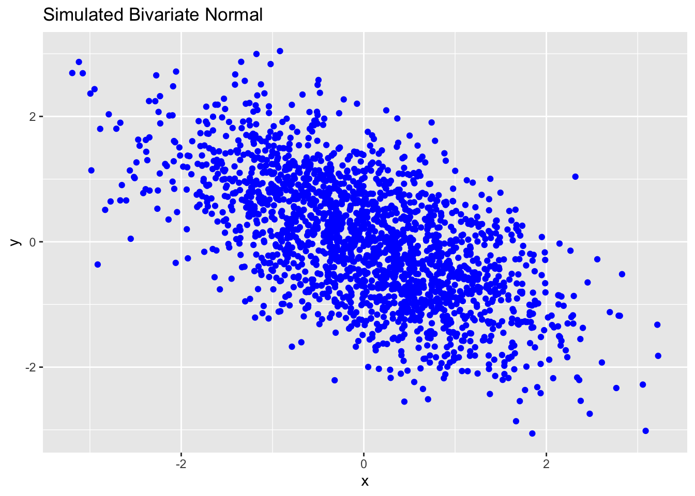
In this workshop we will explore the health economics decision as to whether it is of benefit to the healthcare system to adopt the practice of prophylactically administering an antibiotic to women who are about to give birth by means of Cesarean sections. In this procedure, there is always some risk that a woman will develop an infection during the procedure which will endanger her health, the health of her baby and place a financial burden on the healthcare system. There are several questions that might occur to you. Is the antibiotic effective when administered prophylacticlly? Do infections happen often enough to make it a standard procedure? How many women must become infected before the costs of the extra care require to fight the infection exceed the costs of administering the antibiotic? How much can the health care system spend on each dose of the antibiotic.
The following figure depicts a simplified version ot the decision tree.
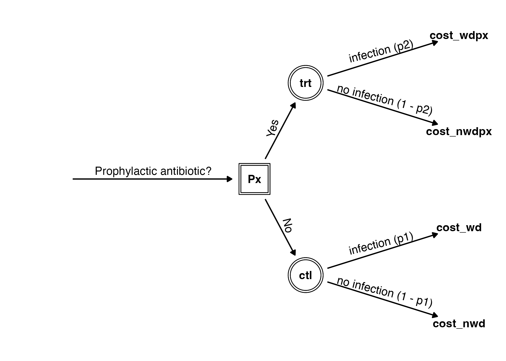
In the remainder of this workshop, we will formulate a version of the typical health technology assessment analysis to support decision makers. The full model will comprise a Bayesian meta-analysis that synthesizes the relevant medical evidence from several clinical studies as well as estimates of the required costs, and outcome probabilities. We won’t jump right in to the full model. Rather we will start with a deterministic version of the decision problem based on a single clinical study and then work our way up from there.
In this section we will present a deterministic model of the problem that can be described by means of the following directed graph.
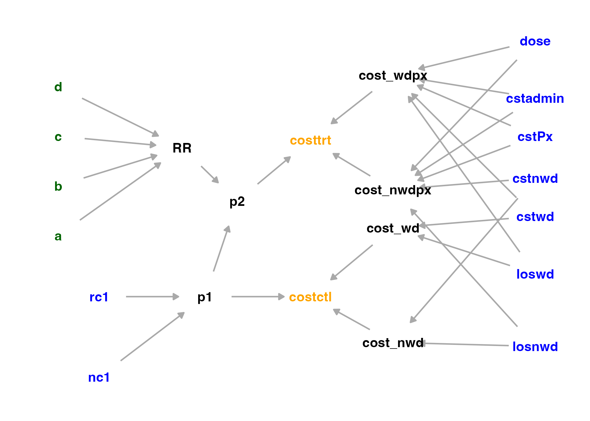
\[ Relative Risk = \frac{a/(a+b)}{c/(c+d)}\]
The deterministic model presented in this section may be found on page 56 in section 3.4 of the text.
The data for our first model comes from a study by Bibi et al., 1994 to test the effectiveness of prophylacticly using antibiotics to reduce infection in women delivering by cesarean section/
effectiveness_df <- data.frame(
Description = c("Prophylactic antibiotics", "Placebo"),
Infection = c(4, 28),
No_infection = c(129, 108),
row.names = c("Treatment", "Control")
) %>% mutate(Total = Infection + No_infection)
effectiveness_df Description Infection No_infection Total
Treatment Prophylactic antibiotics 4 129 133
Control Placebo 28 108 136The resource use and cost data comes from able 3.3, p55. Data is from Mugford et al., 1989, except for the cost of administering antibiotic which was estimated by Welton et al.
cost_df <- data.frame(
Parameter = c( "Length of stay: infection",
"Length of stay: no infection",
"Cost per day: infection",
"Cost per day: no infection",
"Cost per dose: cephaslosporin",
"Cost per administering antibiotic",
"Doses administered",
"Total number of Caesarians",
"Number infections: no antibiotics"
),
Estimate = c(8.80, 6.70, 163.03, 107.26, 5.67, 7.00, 3, 486, 41),
Units=c("days", "days", "£", "£", "£", "£", "count", "count", "count"),
Variable_name=c("loswd", "losnwd", "cstwd", "cstnwd", "cstPx", "cstadmin", "dose", "nc1", "rc1")
)
cost_df Parameter Estimate Units Variable_name
1 Length of stay: infection 8.80 days loswd
2 Length of stay: no infection 6.70 days losnwd
3 Cost per day: infection 163.03 £ cstwd
4 Cost per day: no infection 107.26 £ cstnwd
5 Cost per dose: cephaslosporin 5.67 £ cstPx
6 Cost per administering antibiotic 7.00 £ cstadmin
7 Doses administered 3.00 count dose
8 Total number of Caesarians 486.00 count nc1
9 Number infections: no antibiotics 41.00 count rc1The following code builds a model in the BUGS language for specifying probability distributions that will be evaluated by the rjags interface to the JAGS MCMC engine.
model_code <- "
model {
cost_nwdpx <- losnwd * cstnwd + dose * (cstPx + cstadmin) # Cost (No infection/Px)
cost_wdpx <- loswd * cstwd + dose * (cstPx + cstadmin) # Cost (Infection/Px)
cost_nwd <- losnwd * cstnwd # Cost (No infection/no Px)
cost_wd <- loswd * cstwd # Cost (Infection/no Px)
RR <- (a/(a+b))/(c/(c+d)) # Relative risk using
# data from table 3.2
p1 <- rc1/nc1
p2 <- RR * p1
costtrt <- ((1-p2) * cost_nwdpx) + p2 * cost_wdpx # Total cost (payoff) Px
costctl <- ((1-p1) * cost_nwd) + p1 * cost_wd # Total cost (payoff) No Px
}"
cost_data <- with(cost_df, setNames(as.list(Estimate), nm=Variable_name))
effectiveness_data <- list(
a=effectiveness_df['Treatment', 'Infection'],
b=effectiveness_df['Treatment', 'No_infection'],
c=effectiveness_df['Control', 'Infection'],
d=effectiveness_df['Control', 'No_infection']
)
deterministic_data <- append(cost_data, effectiveness_data)
# deterministic_data <- list(
# losnwd=6.7,
# loswd=8.8,
# cstnwd=107.26,
# cstwd=163.03,
# cstPx=5.67, # !!! `cstdrug` should be `cstPx`
# cstadmin=7,
# dose=3,
# rc1=41,
# nc1=486,
# a=4,
# b=129,
# c=28,
# d=108
# )This code executes the model and displays the results. Notice that the expected costs of the treatment and control branches match those in the text on p56.
results <- jags(
data = deterministic_data,
parameters.to.save = c("p1", "p2", "costtrt", "costctl"),
model.file = model_code %>% textConnection,
n.chains = 1,
n.iter=1,
verbose = FALSE
)results JAGS output for model '5', generated by jagsUI.
Estimates based on 1 chains of 1 iterations,
adaptation = 100 iterations (sufficient),
burn-in = 0 iterations and thin rate = 1,
yielding 1 total samples from the joint posterior.
MCMC ran for 0.001 minutes at time 2025-04-08 08:22:37.722134.
mean sd 2.5% 50% 97.5% overlap0 f
p1 0.084 NA 0.084 0.084 0.084 FALSE 1
p2 0.012 NA 0.012 0.012 0.012 FALSE 1
costtrt 765.476 NA 765.476 765.476 765.476 FALSE 1
costctl 779.047 NA 779.047 779.047 779.047 FALSE 1
overlap0 checks if 0 falls in the parameter's 95% credible interval.
f is the proportion of the posterior with the same sign as the mean;
i.e., our confidence that the parameter is positive or negative.Having established a deterministic baseline model, we now aim to account for the uncertainty in our modeling assumptions by developing a Bayesian stochastic model.

The next step towards working our way up to a full Bayesian model is to assign probability distributions to the clinical variables for which there is uncertainty. These are:
\[ ln(RR)\sim N(\theta, prec)\] \[ \theta = log\left(\frac{a/(a+b)}{c/(c+d)}\right) \] \[ prec = \frac{1}{(1/a) - 1 / (a + b) + (1/c) - 1(/(c + d)} \\\]
where:
\[ p_1 \sim Beta( \alpha, \beta)\]
where:
\(p_2 = e^{lnRR} p_1\)
is the distribution for the probability of an infection with the antibiotic.
\(loswd \sim N(mnloswd, precwd)\)
is the distribution of the length of a hospital stay with infection where:
\(precwd = \frac{1}{(sdloswd/\sqrt{numwd})^2}\)
\(losnwd \sim N(mnlosnwd, precnwd)\)
is the distribution for length of hospital stay without infection, where:
\(precnwd = \frac{1}{(sdlosnwd/\sqrt{numwd})^2}\)
\(cstadmin \sim U(4, 10)\) is the distribution of the antibiotic dose administered.
\(cst.trt = (1-p_2)((cstPx + cstadmin)3 + (losnwd)(cstnwd)) + p_2((cstPx + cstadmin)3 + (loswd)(cstwd))\)
is the total cost for the “payoff” of the antibiotic arm of the decision tree.
\(cst.ctl = (1-p_1)(losnwd)(cstnwd) + p_1(loswd)(cstwd)\)
is the total cost for the payoff of the no antibiotic arm of the decision tree.
\(diff.cost = cst.trt - cst.ctl\) is the differential cost.
This next block of BUGS code implements the stochastic model described above. The code is similar to the deterministic model, but with the addition of the distributions for the parameters that are uncertain. The code is not run here, but is used in the next section to run the model.
stochastic_model_code <- "
model{
lnRR ~ dnorm(theta, prec) # Distribution for ln(Relative Risk)
theta <- log( (a/(a+b)) / (c/(c+d)) )
prec <- 1/( (1/a) - (1/(a+b)) + (1/c) - (1/(c+d)) )
p1 ~ dbeta(alpha, beta) # Distribution for Prob(Infection/NoPx)
alpha <- rc1
beta <- nc1 - rc1
p2 <- exp(lnRR) * p1 # Distribution for Prob(Infection/Px)
loswd ~ dnorm(mnloswd, precwd) # Distribution for length of stay with infection
precwd <- 1/pow(sdloswd/sqrt(numwd), 2)
losnwd ~ dnorm(mnlosnwd, precnwd) # Distribution for length of stay w/o infection
precnwd <- 1/pow(sdlosnwd/sqrt(numnwd), 2)
cstadmin ~ dunif(4, 10) # Px administration
cst.trt <- (1-p2)*((cstPx + cstadmin)*3 + (losnwd*cstnwd)) + p2*((cstPx + cstadmin)*3 + (loswd*cstwd)) # Total cost (payoff) Px
cst.ctl <- (1-p1)*(losnwd*cstnwd) + p1*(loswd*cstwd) # Total cost (payoff) No Rx
diff.cost <- cst.trt - cst.ctl # Difference in cost
}" %>% textConnection()This block of R code provides parameter values for the stochastic model. The values are taken from the text, but some of them have been changed to reflect the fact that we are now using a stochastic model. The changes are indicated in the comments.
stochastic_data <- list(
rc1=41, nc1=486, cstwd=163.03, cstnwd=107.26,
mnloswd=8.8, sdloswd=3.5,
mnlosnwd=6.7, sdlosnwd=7.1,
numwd=41, numnwd=445, # !!! numwd == rc1; numnwd == (nc1 - rc1)
cstPx=5.67,
# rt=4, nt=133, rc=28, nc=136, # !!! Unused variables
a=4, b=129, c=28, d=108
)
# Here I code the changes from the data for the deterministic model to the
# data for the stochastic one, in case that makes the differences easier to see.
# Add these:
# setdiff(names(stochastic_data), names(deterministic_data))
# "mnloswd" "sdloswd" "mnlosnwd" "sdlosnwd"
# "numwd" == rc1;
# "numnwd" == (nc1 - rc1)
#
# Remove or rename these:
# setdiff(names(deterministic_data), names(stochastic_data))
# "loswd" -> "mnloswd"
# "losnwd" -> "mnlosnwd"
# "cstadmin" hard-coded uniform distribution
# "dose": hard-coded !!!
# uncertainty <- c(sdloswd=3.5, sdlosnwd=7.1) # standard deviations from Table 3.4
# rename_me <- c("loswd"="mnloswd", "losnwd"="mnlosnwd")
#
# stochastic_data <- append(deterministic_data, uncertainty)
# for (old_name in names(rename_me)){
# new_name <- rename_me[[old_name]]
# names(stochastic_data)[names(stochastic_data) == old_name] <- new_name
# }
# stochastic_data["cstadmin"] <- NULL # now coded as uniform random
# stochastic_data["dose"] <- NULL # the 3 is hard coded now
#
# stochastic_data["numwd"] <- stochastic_data["rc1"];
# stochastic_data["numnwd"] <- with(stochastic_data, (nc1 - rc1))
parameters_to_save <- c("cst.trt", "cst.ctl", "diff.cost")This code runs the stochastic model. The code is similar to the deterministic model, but with the addition of the distributions for the parameters that are uncertain.
stochastic_results <- jags( data = stochastic_data,
parameters.to.save = parameters_to_save,
model.file = stochastic_model_code,
n.chains = 4,
n.adapt = 100,
n.iter = 50000,
n.burnin = 20000,
verbose = FALSE)The following table shows model results. These include the mean, standard deviations, and quantiles for the posterior distributions of the cost of treatment and control, the differential cost and the relative risk, alonng with information on some diagnostic statistics. The results are similar to those in the text on p 66.
stochastic_results_summary <- summary(stochastic_results) |> as.data.frame() |> select(!c(3,4))
round(stochastic_results_summary,3) mean sd 50% 75% 97.5% Rhat n.eff overlap0 f
cst.trt 766.861 36.479 766.894 791.396 838.622 1 120000 0 1.000
cst.ctl 779.139 35.122 779.226 802.802 847.892 1 120000 0 1.000
diff.cost -12.278 12.817 -11.793 -3.446 11.263 1 120000 1 0.833The diagnostic statistics are interpreted as follows:
In this section we will plot the results of the MCMC sampling. The first plot shows the trace plots for the three parameters of interest. The second plot shows the density plots for the same three parameters. Multiple colors on each of the trace plots indicates that the four independent MCMC chains are on top of each other and mixing well. We can see that the chains have converged to a common distribution.
plot(stochastic_results)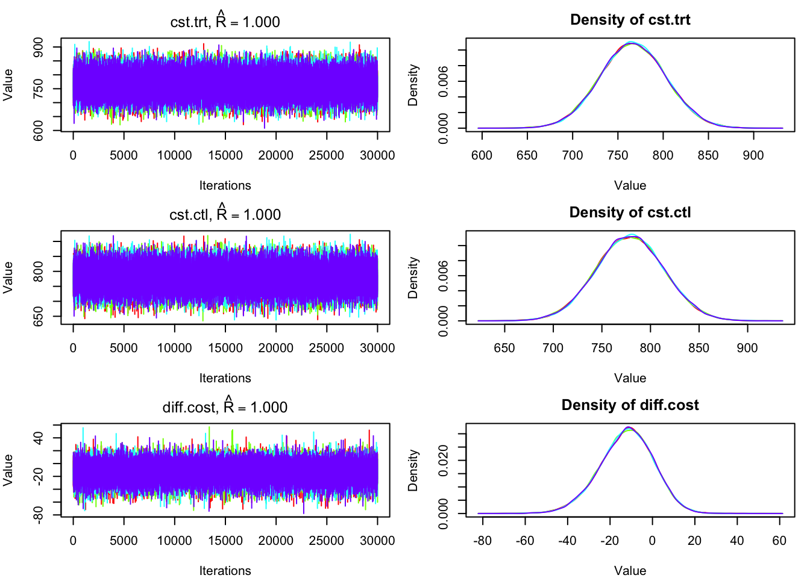
In this section we plot the Prior distribution that were described above.
## Prior Distribution for log Relative Risk
a <- stochastic_data$a
b <- stochastic_data$b
c <- stochastic_data$c
d <- stochastic_data$d
theta <- log( (a/(a+b)) / (c/(c+d)) )
#theta
prec <- 1/( (1/a) - (1/(a+b)) + (1/c) - (1/(c+d)) )
#prec
var = 1/prec
#var
# Generate a sequence of x values
x <- seq(-15, 15, length.out = 100)
# Compute the corresponding beta density values
lnRR <- dnorm(x, theta, prec)
# Create a data frame for ggplot2
norm_data <- data.frame(x = x, y = lnRR)
# Plot the beta distribution
q1 <- ggplot(norm_data, aes(x = x, y = lnRR)) +
geom_line(color = "brown", linewidth = 1) +
geom_area( fill = "brown", alpha = 0.2) +
labs(title = "Prior: Log Relative Risk",
x = "Lpg(RR)",
y = "Density")
### Prior Distribution for p1
# Define the beta distribution parameters
alpha <- stochastic_data$rc1
beta <- stochastic_data$nc1 - stochastic_data$rc1
# Generate a sequence of x values
x <- seq(0, .2, length.out = 100)
# Compute the corresponding beta density values
y <- dbeta(x, alpha, beta)
# Create a data frame for ggplot2
beta_data <- data.frame(x = x, y = y)
# Plot the beta distribution
q2 <- ggplot(beta_data, aes(x = x, y = y)) +
geom_line(color = "blue", linewidth = 1) +
geom_area( fill = "blue", alpha = 0.2) +
labs(title = "Prior: Infection | no antibiotic",
x = "p1",
y = "Density")
### Prior distribution for length of stay, wound infection
# Define the normal distribution parameters
mean <- stochastic_data$mnloswd
sd <- stochastic_data$sdlosnwd/sqrt(stochastic_data$numwd)
# Generate a sequence of x values
x <- seq(5, 15, length.out = 100)
# Compute the corresponding beta density values
y <- dnorm(x, mean, sd)
# Create a data frame for ggplot2
norm_data <- data.frame(x = x, y = y)
# Plot the beta distribution
q3 <- ggplot(norm_data, aes(x = x, y = y)) +
geom_line(color = "red", linewidth = 1) +
geom_area( fill = "red", alpha = 0.2) +
xlim(5,13) +
labs(title = "Prior: length of stay | infection",
x = "Length of Stay (days) ",
y = "Density")
## Prior distribution for length of stay, no wound infection
# Define the normal distribution parameters
mean <- stochastic_data$mnlosnwd
sd <- stochastic_data$sdlosnwd/sqrt(stochastic_data$numnwd)
# Generate a sequence of x values
x <- seq(5, 10, length.out = 100)
# Compute the corresponding beta density values
y <- dnorm(x, mean, sd)
# Create a data frame for ggplot2
norm_data <- data.frame(x = x, y = y)
# Plot the beta distribution
q4 <- ggplot(norm_data, aes(x = x, y = y)) +
geom_line(color = "darkgreen", linewidth = 1) +
geom_area( fill = "green", alpha = 0.2) +
xlim(5, 13) +
labs(title = "Prior: length of stay | no infection",
x = "Length of Stay (days)",
y = "Density")
grid.arrange(q1, q3, q2, q4) Warning: Removed 20 rows containing non-finite outside the scale range
(`stat_align()`).Warning: Removed 20 rows containing missing values or values outside the scale range
(`geom_line()`).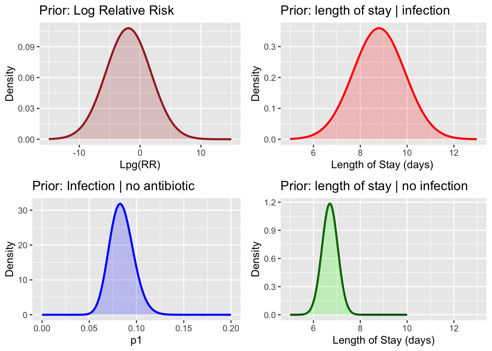
Here we re-sample an existing model and plot densities of several variables using the R functions defined at the beginning of this document.
my_vars <- c('p1', 'p2', 'cst.trt', 'cst.ctl', 'diff.cost')
coda_df <- coda.samples(stochastic_results$model, variable.names = my_vars,
n.iter = 10000) %>%
coda_sample_2_df %>%
sample_frac(1L) # randomly scramble chain orderPlot the posterior densities for the cost of treatment
w1 <- plot_densities_from_coda_df(c('cst.trt', 'cst.ctl'), coda_df) + ggtitle("Posterior Densities for Cost of Treatment")
w1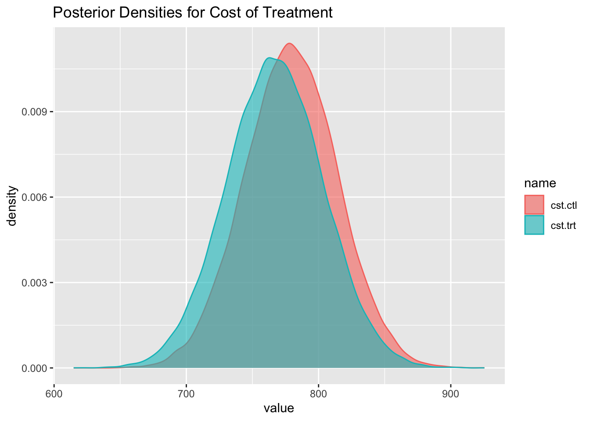
Plot the posterior density for Differential Cost
w2 <- coda_df %>% ggplot(aes(x=diff.cost)) + geom_density(fill = "blue", alpha = 0.5) + ggtitle("Posterior Density for Differential Cost")
w2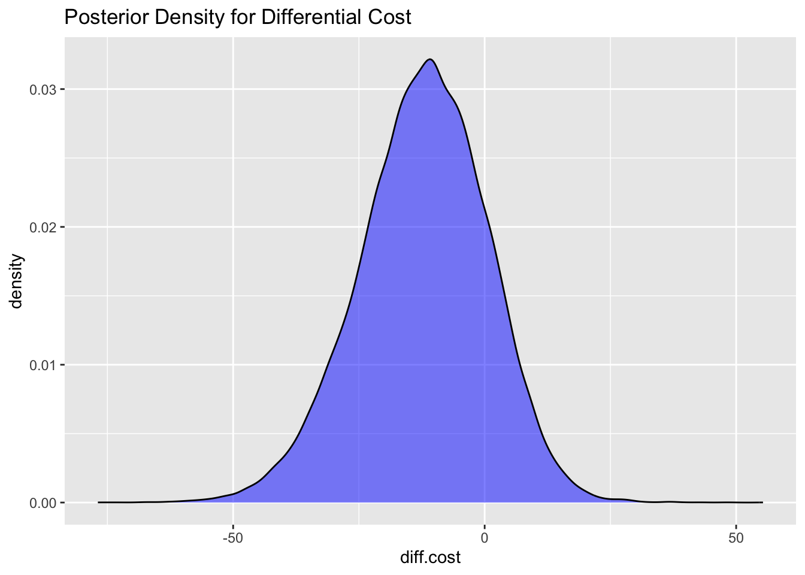
Plot the densities for P1 and P2
w3 <- plot_densities_from_coda_df(c('p1', 'p2'), coda_df) + ggtitle("Posterior Densities for P1 and P2")
w3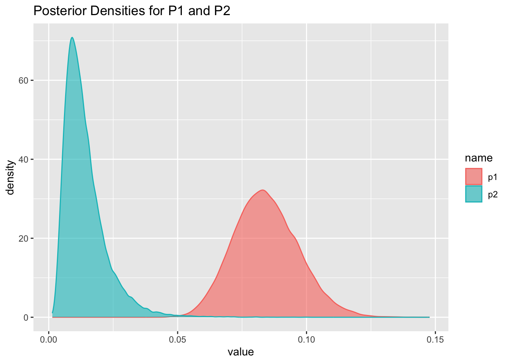
Here we add the code from p65 to the model above.
economic_model_code <- "
model{
lnRR ~ dnorm(theta, prec) # Distribution for ln(Relative Risk)
theta <- log( (a/(a+b)) / (c/(c+d)) )
prec <- 1/( (1/a) - (1/(a+b)) + (1/c) - (1/(c+d)) )
p1 ~ dbeta(alpha, beta) # Distribution for Prob(Infection/NoPx)
alpha <- rc1
beta <- nc1 - rc1
p2 <- exp(lnRR) * p1 # Distribution for Prob(Infection/Px)
loswd ~ dnorm(mnloswd, precwd) # Distribution for length of stay with infection
precwd <- 1/pow(sdloswd/sqrt(numwd), 2)
losnwd ~ dnorm(mnlosnwd, precnwd) # Distribution for length of stay w/o infection
precnwd <- 1/pow(sdlosnwd/sqrt(numnwd), 2)
cstadmin ~ dunif(4, 10) # Px administration
cst.trt <- (1-p2)*((cstPx + cstadmin)*3 + (losnwd*cstnwd)) + p2*((cstPx + cstadmin)*3 + (loswd*cstwd)) # Total cost (payoff) Px
cst.ctl <- (1-p1)*(losnwd*cstnwd) + p1*(loswd*cstwd) # Total cost (payoff) No Rx
diff.cost <- cst.trt - cst.ctl # Difference in cost
# Economic evaluation code from pp 65-66
totQALYs.wd <- ((QALYwd/365)*loswd) + ((Fullhealth/365)*(fllwupdays-loswd)) # QALYs (infection)
totQALYs.nwd <- ((QALYnwd/365)*losnwd) + ((Fullhealth/365)*(fllwupdays-losnwd)) # QALYs (No infection)
QALYs.trt <- (1-p2) * totQALYs.nwd + p2 * totQALYs.wd # QALYs (Px)
QALYs.ctl <- (1-p1) * totQALYs.nwd + p1 * totQALYs.wd # QALYs (no px)
diff.QALYs <- (QALYs.trt - QALYs.ctl) # Difference in QALYs
for (k in 1:M)
{
lambda[k] <- (k-1) * 2000
INB[k] <- lambda[k] * diff.QALYs - diff.cost # !!! not `delta.Qalys` or `delta.cost`
ProbCE[k] <- step(INB[k])
}
}
" %>% textConnection()
# economic_data <- list(
# rc1=41, nc1=486, cstwd=163.03, cstnwd=107.26,
# mnloswd=8.8, sdloswd=3.5,
# mnlosnwd=6.7, sdlosnwd=7.1,
# numwd=41, numnwd=445,
# cstPx=5.67,
# a=4, b=129, c=28, d=108,
# # additional data for economic evaluation
# M=21, QALYwd=0.68, QALYnwd=0.88, Fullhealth=1, fllwupdays=20
# )
economic_data <- append(stochastic_data,
# additional data for economic evaluation
list(M=21, QALYwd=0.68, QALYnwd=0.88, Fullhealth=1, fllwupdays=20)
)
parameters_to_save <- c(#"ProbCE",
"cst.trt", "cst.ctl", "diff.cost", "p1", "p2")economic_results <- jags(data = economic_data,
parameters.to.save = parameters_to_save,
model.file = economic_model_code,
n.chains = 1,
n.adapt = 100,
n.iter = 50000,
n.burnin = 20000,
verbose=FALSE)And now, the economic results
economic_results_summary <- summary(economic_results) %>% as.data.frame()
round(economic_results_summary,3) |> select(!c(3,4)) mean sd 50% 75% 97.5% Rhat n.eff overlap0 f
cst.trt 766.875 36.681 766.795 791.693 839.172 NA 1 0 1.000
cst.ctl 779.184 35.302 778.983 803.017 848.766 NA 1 0 1.000
diff.cost -12.309 12.812 -11.783 -3.497 11.143 NA 1 1 0.834
p1 0.084 0.013 0.084 0.092 0.111 NA 1 0 1.000
p2 0.014 0.008 0.012 0.017 0.035 NA 1 0 1.000The following figure which plots the results of many simulations of the economic model on the cost-effectiveness plane is the major tool for faciliting the decision as to whether to adopt the practice of prophylactically administering antibiotics. The x-axis represents the incremental QALYs and the y-axis represents the incremental costs. The dashed lines represent different values for \(\lambda\) the cut-off cost. The solid line represents the line of no difference in cost or QALYs.
#Figure 3.4: Cost-effectiveness plane (10000 simulations) for Caesarean section example.
ce_vars <- c("diff.QALYs", "diff.cost")
ce_df <- coda.samples(economic_results$model, variable.names = ce_vars,
n.iter = 10000) %>% coda_sample_2_df
XLIM = c(0, 7e-4) # use same limits as chapter 3
YLIM = c(-75, 50)
LAMBDAS = 10000*(1:3)
CE_1 <-ce_df %>%
ggplot(aes(x=diff.QALYs, y=diff.cost, col=chain)) +
geom_point(size=0.5, alpha=0.1) +
geom_abline(slope=0, intercept=0, linetype='solid') +
geom_abline(slope=LAMBDAS, intercept=0, linetype='dotted') +
theme(legend.position="none") +
labs(x = "Incremental QALYs", y = "Incremental costs", title="Cost-effectiveness plane for Caesarian section example") +
coord_cartesian(xlim=XLIM, ylim=YLIM) +
annotate("text", x = XLIM[2], y = LAMBDAS * XLIM[2],
size=3, hjust=0.8, vjust=-0.25,
label = paste("lambda ==", LAMBDAS), parse=TRUE)
CE_1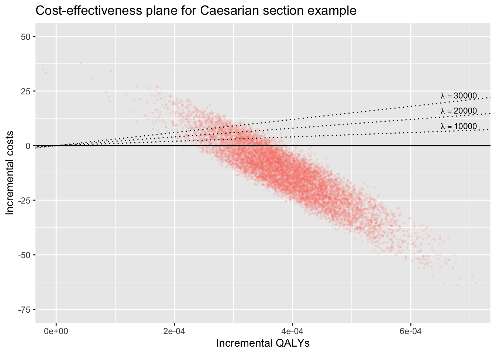
This next figure shows the expected incremental net benefit and 95% credible interval for a range of lambda values. The x-axis represents the value of lambda and the y-axis represents the expected incremental net benefit. The dashed lines represent the 2.5% and 97.5% quantiles of the posterior distribution of the incremental net benefit.
inb_vars <- c("INB", "ProbCE")
inb_df <- coda.samples(economic_results$model, variable.names = inb_vars,
n.iter = 10000) %>%
coda_sample_2_df %>%
group_by(chain) %>%
mutate(iteration=row_number()) %>%
ungroup() %>%
as.data.frame
inb_df_long <- inb_df %>%
pivot_longer(
cols=1:42,
names_to=c("metric", "k"),
names_pattern="(INB|ProbCE)\\[(\\d+)\\]",
values_to="value"
) %>%
mutate(k=as.integer(k), lambda=2000*(k-1))
inb_df_long %>%
group_by(metric, lambda) %>%
filter(metric=="INB") %>%
summarize(
mean_INB=mean(value),
lo_end=quantile(value, probs=0.025),
hi_end=quantile(value, probs=0.975)) %>%
ggplot(aes(x=lambda, group=metric)) +
geom_line(aes(y=mean_INB)) +
geom_line(aes(y=lo_end), linetype="dashed") +
geom_line(aes(y=hi_end), linetype="dashed")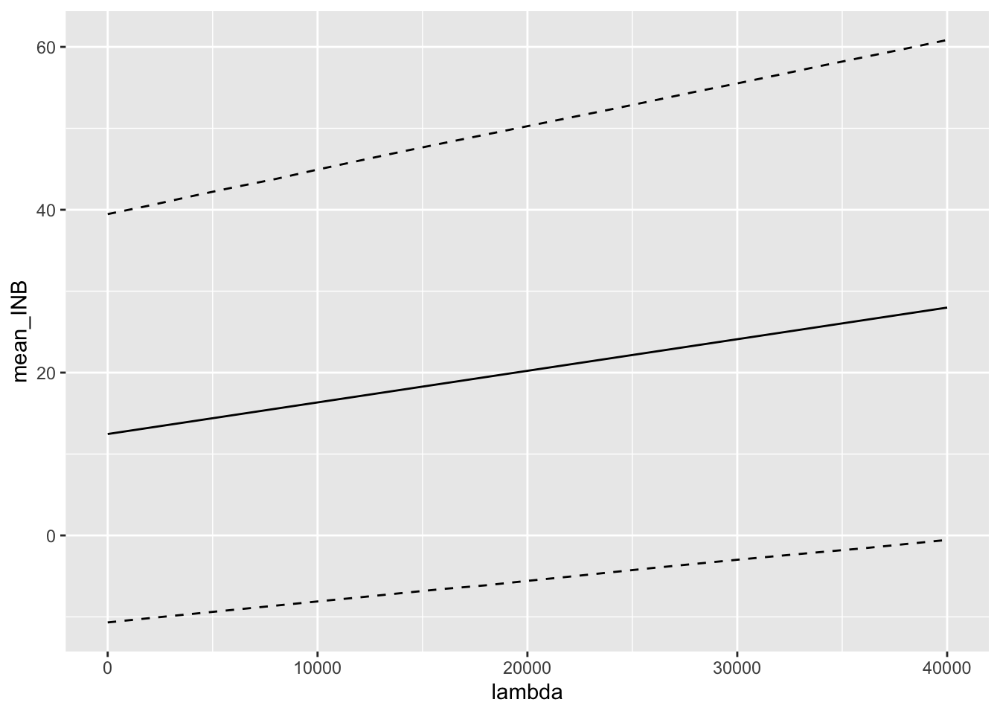
As we promised, having built up the structure of the decision model, we now show the meta-analysis model that drives the economic evaluation. The model is a Bayesian hierarchical model that uses the data from the thirty-five clinical trials to estimate the risk of infection with and without prophylactic antibiotics. The model is a random effects model that accounts for the heterogeneity between the trials.
Note that we are presenting only the second second part of the a typical meta analysis. The fist part, a systematic search of the literature to decide what studies to include in the analysis which is not included here, would deserve its own workshop.
The data for the Meta-analysis comes from a 2001 Cochrane Review article Smaill & Hofymer (2001) that was subsequently withdrawn by the publisher because it was out of date replaced by Smaill & Grivell (2014). Nevertheless that data remains suitable for our purposes.
The data comes from Table 7.1 of the text (page 142), shich summarizes the results of thirty-four clinical trials.The column headings are:
c_df <-read_csv("c_data.csv", show_col_types = FALSE)
names(c_df) <- c("rt", "nt", "rc", "nc")
head(c_df)# A tibble: 6 × 4
rt nt rc nc
<dbl> <dbl> <dbl> <dbl>
1 4 133 28 136
2 2 68 1 56
3 5 55 8 55
4 3 100 0 33
5 4 183 3 44
6 0 46 4 55Look at the data
OR <- c(c_df$rt,c_df$rc)
group <- c(rep("treat",length(c_df$rt)), rep("control",length(c_df$rt)))
long_df <- data.frame(OR,group)
# Plot histograms with kernel density estimates, faceted by group
ggplot(long_df, aes(x = OR, fill = group)) +
geom_histogram(aes(y = after_stat(density)), bins = 30, alpha = 0.4) +
geom_density(alpha = 0.6) +
labs(
title = "Histograms and Kernel Density Estimates (Faceted by Group)",
x = "OR",
y = "Density"
) +
scale_fill_manual(values = c("blue", "darkgreen")) +
facet_wrap(~ group, scales = "free")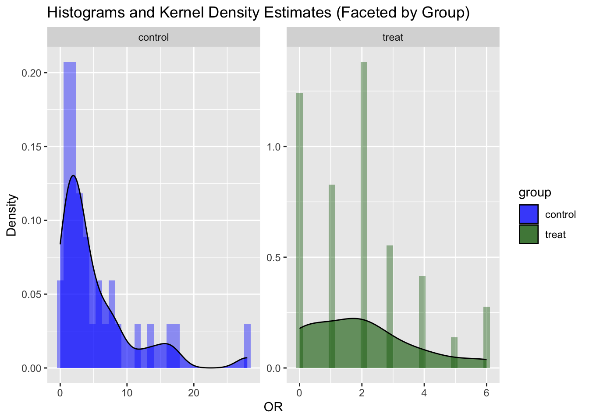
Here are the BUGS language models, both the meta-analysis model and the decision model.
# Model
model_code <- "model
{
# META-ANALYSIS ADJUSTING FOR BASELINE RISK
for (i in 1:Num)
{
rc[i] ~ dbin(pc[i], nc[i])
rt[i] ~ dbin(pt[i], nt[i])
logit(pc[i]) <- mu[i]
logit(pt[i]) <- mu[i] + delta[i]
delta[i] <- delta.star[i] + beta * (mu[i]-(-1.09))
mu[i] ~ dnorm(0.0,1.0E-3)
delta.star[i] ~ dnorm(d, prec)
}
d ~ dnorm(0.0,1.0E-6)
OR <- exp(d)
d.pred ~ dnorm(d,prec)
beta ~ dnorm(0.0,1.0E-6)
tau ~ dunif(0,10)
tau.sq <- tau*tau
prec <- 1/tau.sq
# DEVIANCE CONTRIBUTION
for (i in 1:Num)
{
rthat[i] <- pt[i] * nt[i]
dev[i] <- 2 * (rt[i] * (log(rt[i])-log(rthat[i])) + (nt[i]-rt[i]) * (log(nt[i]-rt[i]) - log(nt[i]-rthat[i])))
}
sumdev <- sum(dev[])
# DATA FOR DECISION MODEL
# Probability of wound infection without antibiotics
rc1 ~ dbin(p1,nc1)
p1 ~ dbeta(1,1)
# Probability of wound infection with antibiotics
logit(p2) <- logit(p1) + d + beta*(logit(p1)-(-1.09))
# Length of stay in hospital with wound infection
loswd ~ dnorm(mnloswd,precwd)
precwd <- 1/pow(sdloswd/sqrt(numwd),2)
# Length of stay in hospital without wound infection
losnwd ~ dnorm(mnlosnwd,precnwd)
precnwd <- 1/pow(sdlosnwd/sqrt(numnwd),2)
# Antibiotics administration costs
drugadmin ~ dunif(4,10)
# QALYs - wound infection
QALYs.wd <- ((QALYwd/365)*loswd)+((Fullhealth/365)*(fllwupdays-loswd))
# QALYs - no wound infection
QALYs.nwd <- ((QALYnwd/365)*losnwd)+((Fullhealth/365)*(fllwupdays-losnwd))
# DECISION MODEL
# Cost with prophylactic antibiotics
cst.trt <- (1-p2) * ((antibiotic+drugadmin) * 3 + (losnwd*inptnwd)) + p2 * ((antibiotic+drugadmin) * 3 + (loswd * inptwd))
# Cost without prophylactic antibiotics
cst.ctl <- (1-p1) * (losnwd*inptnwd) + p1 * (loswd*inptwd)
# Difference in cost
diff.cost <- cst.trt - cst.ctl
# Number of wound infections avoided using prophylactic antibiotics
diff.wd <- (nc1 * (p1 - p2))
# QALYs - with prophylactic antibiotics
QALYs.trt <- (1-p2) * QALYs.nwd+p2 * QALYs.wd
# QALYs - without prophylactic antibiotics
QALYs.ctl <- (1-p1) * QALYs.nwd+p1 * QALYs.wd
# Difference in QALYs
diff.QALYs <- (QALYs.trt - QALYs.ctl)
# Probability using prophylactic antibiotics costs less than not using prophylactic antibiotics
Q <- step(cst.ctl - cst.trt)
# Cost effectiveness ratio
ce.ratio <- diff.cost/diff.wd
cu.ratio <- diff.cost/diff.QALYs
# INCREMENTAL NET BENEFIT
for (k in 1:M)
{
Rc1[k] <- (k-1) * 2000
INB.QALYs[k] <- Rc1[k] * diff.QALYs - diff.cost
ProbCU[k] <- step(INB.QALYs[k])
}
}
" %>% textConnectionIn this ploc we specify the parameters for the decision model and re-enter the meta-analysis model in a form required by JAGS.
# Data
data <- list(
Num=35, # number of studies
rc1=41, # number of infections in control group
nc1=486, # number of patients in control group
inptwd=163.03, # cost of inpatient care with infection
inptnwd=107.26, # cost of inpatient care without infection
mnloswd=8.8, # mean length of stay with infection
sdloswd=3.5, # standard deviation of length of stay with infection
mnlosnwd=6.7, # mean length of stay without infection
sdlosnwd=7.1, # standard deviation of length of stay without infection
numwd=41, # number of patients with infection
numnwd=445, # number of patients without infection
antibiotic=5.67, # cost of antibiotic
M=21, # number of lambda values
QALYwd=0.68, # QALY with infection
QALYnwd=0.88, # QALY without infection
Fullhealth=1, # QALY for full health
fllwupdays=20, # follow-up days
rt = c_df$rt, # pooled odds ratio for treated arm
nt = c_df$nt, # number of subjects in treated arm
rc = c_df$rc, # pooled odds ratio for control arm
nc = c_df$nc # number of subjects in control arm
)In this section we initialize the Markov Chains. # Starting/initial values
initial_values <- list(
list(
tau=1,
delta.star= rep(0,data$Num),
d=0,
mu=c - rep(0,data$Num),
p1=1e-6, # 1e-6 works, 0.0 does not
beta=1e-6 # 1e-6 works, 0.0 does not
),
list(
tau=0.1,
delta.star=rep(1,data$Num),
d=1,
mu = rep(1,data$Num),
p1=0.5,
beta=1)
)
parameters_to_save <- c("ProbCU", "INB.QALYs", "Rc1", "diff.QALYs","diff.cost","OR",
"beta","ce.ratio","cu.ratio","p1","p2",
"sumdev","tau.sq")Here, we run the model.
mad_results <- jags(data = data,
inits = initial_values,
parameters.to.save = parameters_to_save,
model.file = model_code,
n.chains = length(initial_values),
n.adapt = 100,
n.iter = 50000,
n.burnin = 20000,
n.thin = 2,
verbose = FALSE)mad_results_summary <- summary(mad_results) %>% as.data.frame()
mad_results_short <- mad_results_summary |> select(!c(3,4,11)) |>
slice(c(1,22,43, 64:74)) |> round(2)
mad_results_short mean sd 50% 75% 97.5% Rhat n.eff overlap0
ProbCU[1] 0.75 0.44 1.00 1.00 1.00 1.00 30000 1
INB.QALYs[1] 8.69 12.58 7.99 16.67 35.38 1.00 30000 1
Rc1[1] 0.00 0.00 0.00 0.00 0.00 NA 1 1
diff.QALYs 0.00 0.00 0.00 0.00 0.00 1.00 1 0
diff.cost -8.69 12.58 -7.99 0.17 13.95 1.00 30000 1
OR 0.06 0.01 0.06 0.07 0.09 1.01 277 0
beta -1.01 0.05 -1.01 -0.99 -0.91 1.00 324 0
ce.ratio -0.22 0.38 -0.25 0.01 0.63 1.00 30000 1
cu.ratio -18067.97 33383.42 -22611.89 565.32 59984.31 1.00 30000 1
p1 0.09 0.01 0.09 0.09 0.11 1.00 30000 0
p2 0.02 0.00 0.02 0.02 0.03 1.01 445 0
sumdev 43.72 7.01 44.62 49.16 55.09 1.01 264 0
tau.sq 0.21 0.23 0.14 0.31 0.82 1.01 21106 0
deviance 257.52 11.49 257.38 265.11 280.69 1.00 30000 0plot(mad_results, parameters=c("diff.QALYs","diff.cost","OR",
"ce.ratio","cu.ratio","p1","p2"))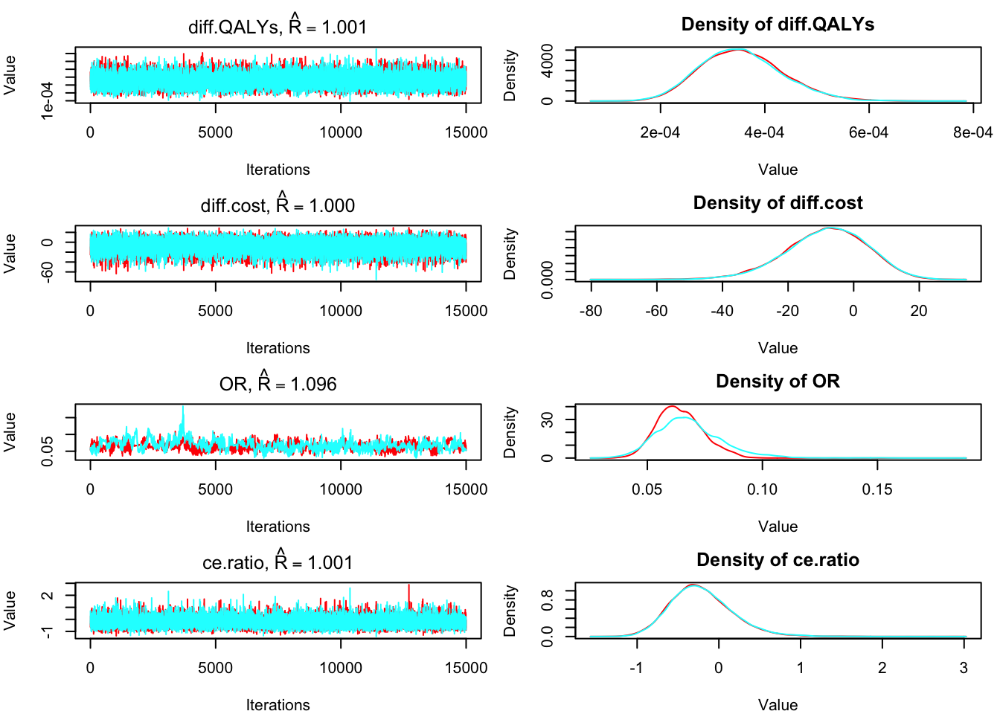
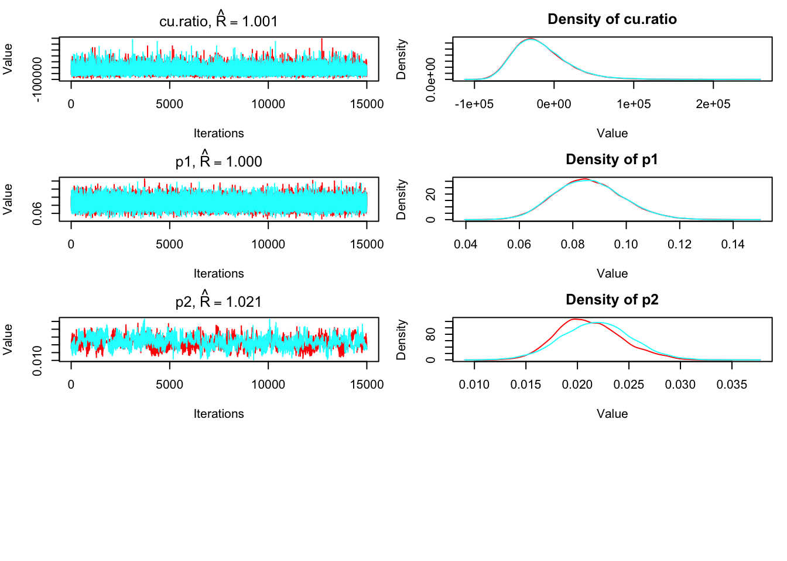
Here we re-sample the model to monitor cost-effectiveness parameters.
For an example using coda.samples, see the course notes from Bayesian Analysis in JAGS: EMD chapter 6.
ce_coda_sample <- coda.samples(mad_results$model, variable.names = c("diff.QALYs", "diff.cost"),
n.iter = 10000)
# one set of results per chain?
library(ggplot2)
# coda_sample[[1]] %>% as.matrix %>% as.data.frame %>%
# ggplot(aes(x=diff.QALYs, y=diff.cost)) + geom_point()
coda_sample_2_df <- function(my_coda_sample){
seq_along(my_coda_sample) %>% lapply(function(chain){
df <- my_coda_sample[[chain]] %>% as.matrix %>% as.data.frame
df['chain'] <- chain
df
}) %>%
bind_rows %>%
mutate(chain=factor(chain))
}
ce_df <- ce_coda_sample %>%
coda_sample_2_df %>%
sample_frac(1L) # randomly scramble chain order
XLIM = c(0, 7e-4) # use same limits as chapter 3
YLIM = c(-75, 50)
LAMBDAS = 10000*(1:3)
CE_2 <- ce_df %>%
filter(chain == 1) %>% # to compare to Ch3, which had only one chain
ggplot(aes(x=diff.QALYs, y=diff.cost, col=chain)) +
geom_point(size=0.5, alpha=0.1) +
geom_abline(slope=0, intercept=0, linetype='solid') +
geom_abline(slope=LAMBDAS, intercept=0, linetype='dotted') +
theme(legend.position="none") +
labs(x = "Incremental QALYs", y = "Incremental costs", title="Cost-effectiveness plane for Caesarian section example with meta-analysis") +
coord_cartesian(xlim=XLIM, ylim=YLIM) +
annotate("text", x = XLIM[2], y = LAMBDAS * XLIM[2],
size=3, hjust=0.8, vjust=-0.25,
label = paste("lambda ==", LAMBDAS), parse=TRUE)
CE_2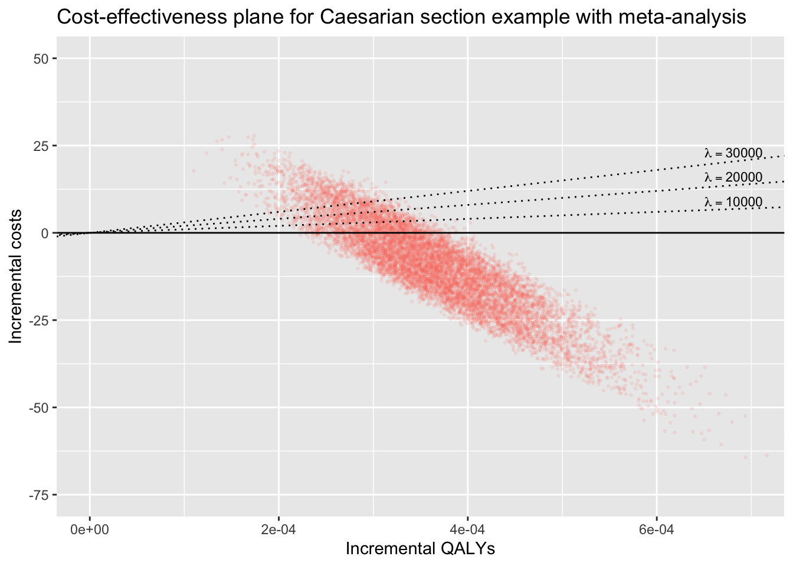
We have presented a classic decision analysis problem informed by a Bayesian statistical analysis and a decision structure that includes economic analysis and utility measured QALYs. The decision is from the point of view of a public health system that concerned with providing the best outcome for a population given their budgetary constraints. However, the framework and the methodology can easily be reframed for decisions to be made by other organizations and individuals.
Bayesian analysis is the best choice for this kind of decision for a number of reasons, but two advantages stand out:
We have also introduced the basics of Markov Chain Monte Carlo techniques which allow the numerical approximation complex probability distributions that would otherwise be intractable.